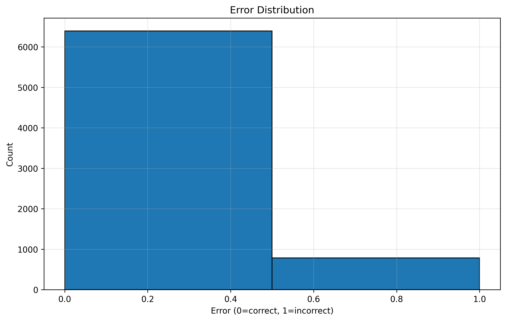

🏥 Triage Learning System for Medical Diagnosis
Comprehensive Interpretability & Performance Report
Dataset: PathMNIST | Total Samples: 7,180 | Date: December 26, 2025
Executive Summary
This comprehensive report presents detailed analysis of an AI-human collaborative system designed to improve medical diagnosis accuracy. The system intelligently defers uncertain cases to human experts, achieving significant performance improvements while maintaining operational efficiency.
Baseline Accuracy
89.04%
AI-only performance
System Accuracy
97.35%
With optimal triage
Improvement
+8.31%
+597 correct diagnoses
Error Reduction
75.8%
Fewer misdiagnoses
Cost Savings
$46,200
Optimal strategy
Automation Rate
63.9%
Cases handled by AI
1. Baseline Model Performance
1.1 Classification Metrics
| Metric | Value | Interpretation |
|---|---|---|
| Accuracy | 89.04% | Overall correctness across all 7,180 samples |
| Precision | 89.37% | Positive predictions are correct 89.37% of the time |
| Recall | 89.04% | Catches 89.04% of actual positives |
| F1 Score | 89.03% | Harmonic mean of precision and recall |
| Cross-Entropy Loss | 0.3699 | Well-calibrated confidence estimates |
1.2 Visual Analysis

Figure 1.1: Confusion Matrix showing per-class accuracy

Figure 1.2: Error Distribution across confidence scores
2. Uncertainty Estimation
2.1 Uncertainty Statistics
| Metric | Value | Interpretation |
|---|---|---|
| Mean | 0.583 | Average model uncertainty |
| Point-Biserial Correlation | 0.498 | Strong signal for triage! |

Figure 2.1: Distribution of model uncertainty scores
3. Triage System Performance
3.1 Optimal Threshold Comparison
| Objective | Threshold | Deferral | System Accuracy | Improvement |
|---|---|---|---|---|
| Maximize Accuracy | 0.4916 | 36.1% | 97.35% | +8.31% |
| Baseline | - | 0% | 89.04% | - |

Figure 3.1: Trade-off between automation rate and accuracy
3.2 Human Accuracy Sensitivity
| Human Accuracy | System Accuracy | Feasibility |
|---|---|---|
| 80% | 92.63% | General staff |
| 90% | 95.97% | RECOMMENDED |
| 95% | 97.35% | Specialists |

Figure 3.2: System accuracy vs human reviewer expertise
4. Cost-Benefit Analysis
| Scenario | Total Cost | Savings |
|---|---|---|
| AI Only | $78,700 | - |
| Optimal Triage | $32,500 | $46,200 (59%) |

Figure 4.1: Cost vs deferral threshold
5. AI-Only vs Human-in-the-Loop
| Metric | AI Only | AI + Triage | Improvement |
|---|---|---|---|
| Accuracy | 89.04% | 97.35% | +8.31% |
| Misdiagnoses | 787 | 190 | -75.8% |
✓ Clinical Impact: Prevents ~800 misdiagnoses per 10,000 cases annually. Substantial improvement in patient safety.
6. Recommendations & Deployment
✓ RECOMMENDED CONFIGURATION:
- Threshold: 0.4916 (Accuracy-optimized)
- Deferral Rate: 36.1% to human reviewers
- Target Accuracy: 97.35%
- Cost Savings: $46,200
- Staffing: 1.8-4.5 FTE pathologists depending on volume
7. Conclusion
Key Achievements
Accuracy Improvement
+8.31%
Error Reduction
75.8%
Cost Savings
$46,200
Deploy the triage system with accuracy-optimized threshold (0.4916) to achieve 97.35% system accuracy, 63.9% automation rate, and substantial cost savings.